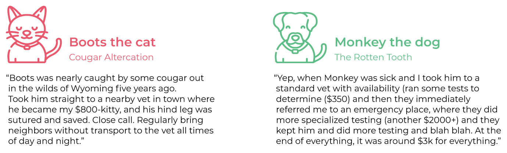
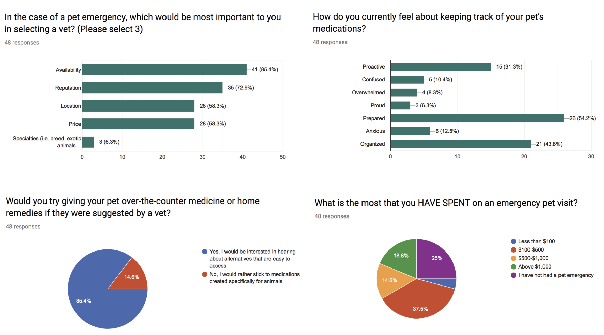
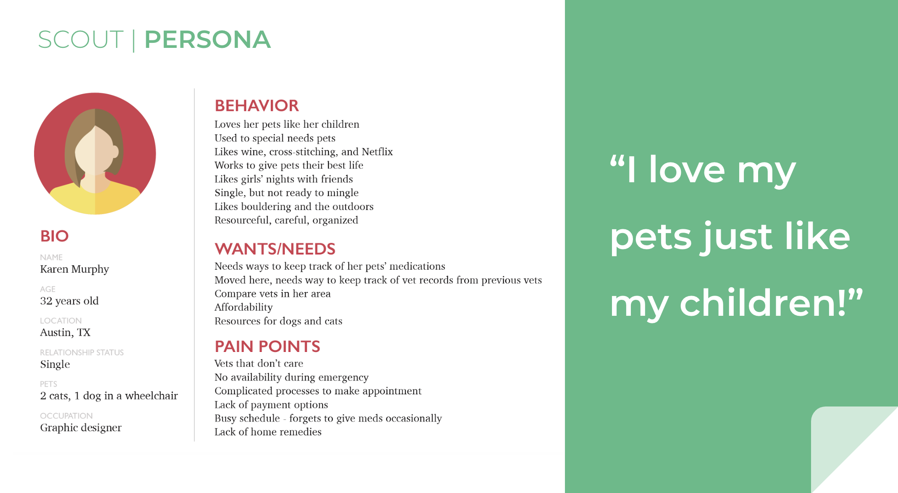
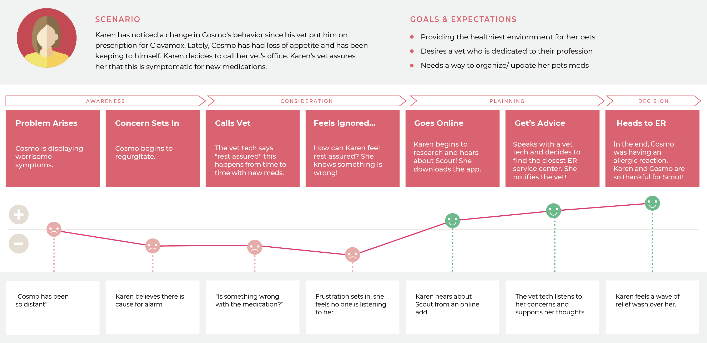
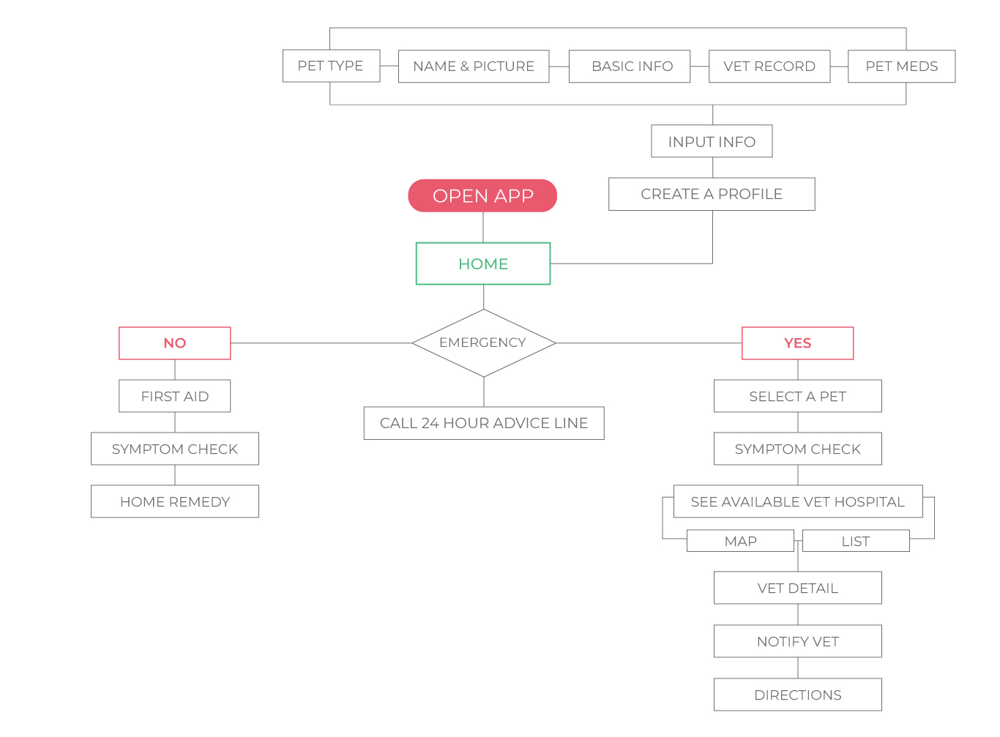
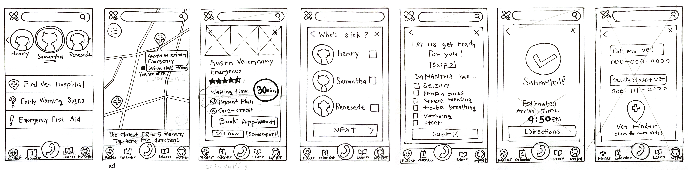
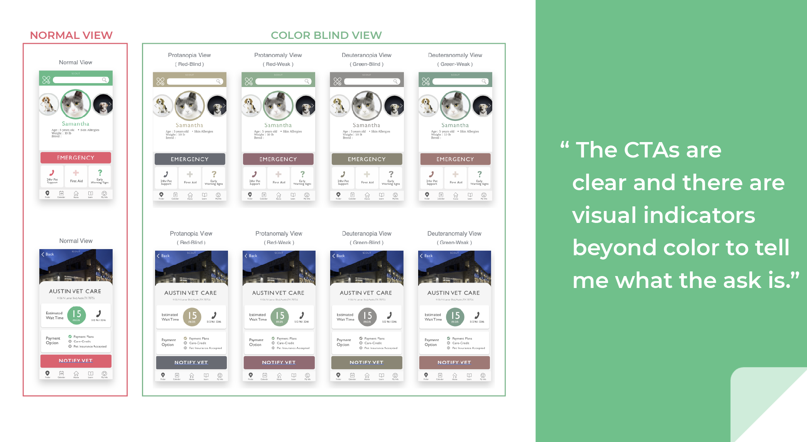
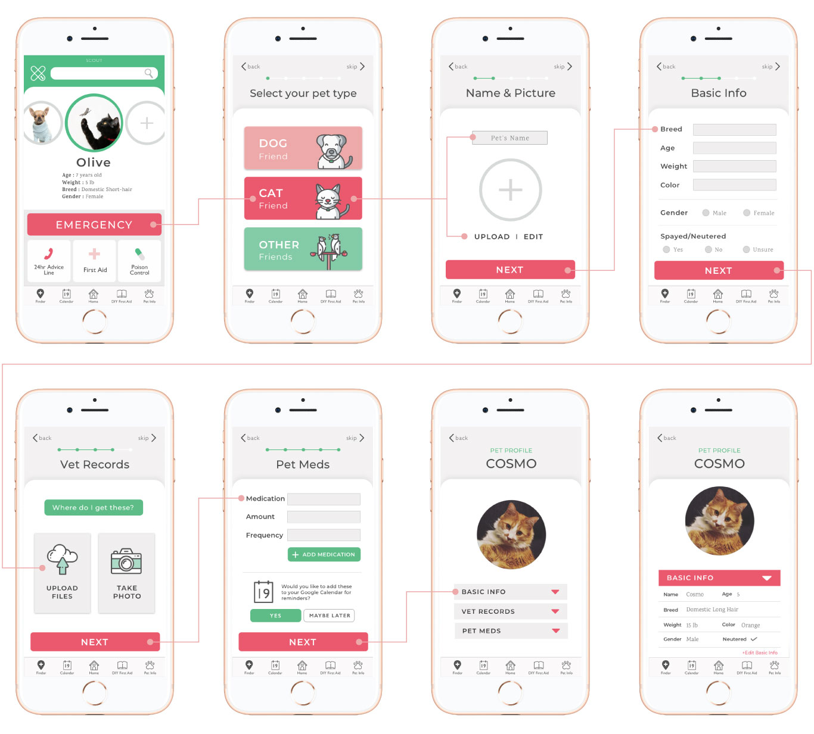
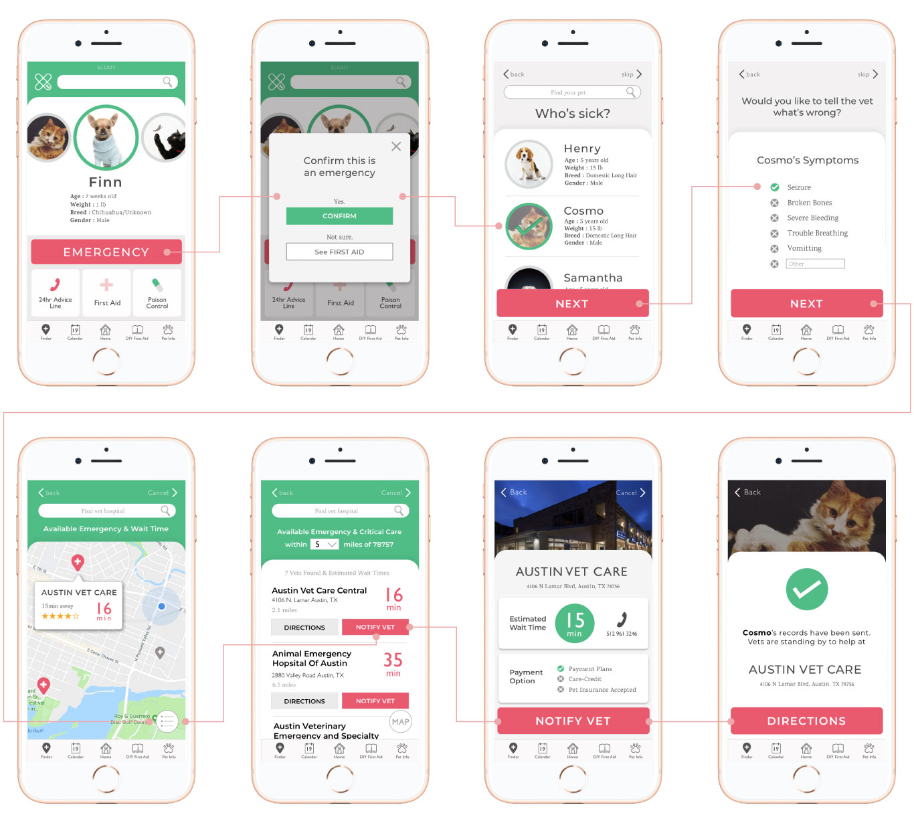
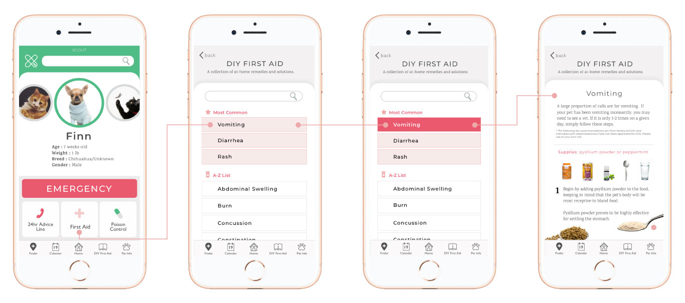

SCOUT
Vet ER App Design
Scout App navigates pet owners through an emergency situation by helping them locate veterinarians outside of regular hours & improving the intake process for both parties.
TEAM
I collaborated
with 4 of my colleagues
ROLE : DESIGNER
User Research
Style Guide
Wireframe & Prototype
AB Testing
Coding
TOOLS
Sketch
Invision
Illustrator
VS Code
Git hub
USER RESEARCH
Based on our experiences, we discussed about what features could help users in an emergency situation. In order to validate our ideas and gain more insights of users' experiences, we came up with questions we should ask for both interview & Survey.
User Stories
Survey

48 Pet Owners Surveyed
Discover how pet owners currently handle emergencies Better understand user needs and wants Gauge interest around new offerings
Major Findings
People do not know how to proceed when unexpected situations arise It is not easy finding 24 hr veterinarian centers
Additional Findings
Top determinants when choosing a veterinarian during an emergency: Availability (85%), Reputation (73%), and Location (58%) 85% surveyed: “Yes, I would be interested in at-home remedies.”
PERSONA

JOURNEY MAP

OUR GOAL
Our goal is to create a mobile app that will navigate pet owners through an emergency situation.
1) helping them locate veterinarians outside of regular hours
2) improving the intake process for both parties.
INFORMATION ARCHITECTURE

WIREFRAME

STYLE GUIDE
Because this is an emergency application, we wanted to use colors that gives a calming and soothing feeling.
In contrast, the addition of an accent color created a sense of urgency.
COLOR BLIND TEST

FINAL PROJECT

OVERVIEW SCREEN
"Create a pet profile"
"Notify vet in an emergency situation"
"I'm not sure if this is an emergency"
GROWTH OPPORTUNITIES
• Calendar with push notifications to help with managing pet medications
• Setting a vet as your primary vet and booking regular appointments
• Incorporating video chat access with a vet tech / vet’s office
• Expanding to livestock
FINAL THOUGHTS
During the design phase, this project made us realize the UX design process is not only about solving problems with the tasks given to users, but also about identifying understandings to what types of relationship people are having with their pets. We noticed how attached people are with their pets and the way people care about their pets was insightful for us to build a caring personality for branding.
A new understanding of teamwork
As everybody sees things differently, they also think differently.
So as a team, it's really important to let individuals understand what you see and how you think.
At the same time, it is really important to listen to all opinions.
Even if the team is not applying things that someone suggested, it is always better to entertain each idea. This is essential for creating a respectful, productive culture.
When everybody is respected within the team, I notice motivation increases, allowing team members to want to do more for the project they are working on.
This project was a great success due to the simple fact that our teamwork was based on mutual understanding and a fundamental respect of each other's ideas.